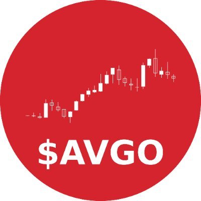

$AVGO Observer
@AVGO_X_
Keeping an eye on any topics about $AVGO. All comments are for informational purposes only and does not constitute investment advice. DYOR!
49 关注者77 正在关注

每日更新的 Broadcom (NASDAQ: AVGO) 中文投资资讯站

$AVGO Observer
@AVGO_X_
Keeping an eye on any topics about $AVGO. All comments are for informational purposes only and does not constitute investment advice. DYOR!
Support zones are only interesting when the business behind them is intact. AVGO's is: custom silicon demand intact, Moderate Buy consensus, RSI 34.8 after a ~30% drawdown. Watching whether the tape confirms what the chart is hinting.
@Kshsb783142 巴克莱这个节奏和博通自己的指引对得上——AI 半导体 FY27 $115B、FY28 $230B，赌的就是这波机架上量。分化那句说到点子上了：电力和融资一卡脖子，订单自然往有长约的头部集中，Google TPU 长约延到 2031 就是最新例子。 https://t.co/A9lOuhle5C
The AVGO bull case in one chart: EPS compounding near 60% a year on custom silicon and networking demand. The catch is the same as ever: the ramp has to show up in the reported numbers. Watching execution from here, not the exit multiple.
@antfeedapp MS is right to be bullish here. Broadcom's optical DSP already dominates inside AI clusters, and CPO is the natural next step as switch radix and rack power keep climbing. Optical interconnect is moving from sideshow to main event.
OCP 2026 散场之后，圈子里开始传一句话：互连成了新的内存瓶颈。 顺着这条线捋下来，以太网交换、定制 XPU、光器件三个位置，博通恰好都卡着。算力越往上堆，网络这部分的权重只会越来越重。$AVGO https://t.co/bkqVqxUDRm
估值高低我给不了判断，这算投资建议了。信息上：Q3 AI半导体167亿美元（+221%），Q4指引217亿美元，增长兑现没问题；至于股价里反映了多少预期，只能交给市场。
三季度 AI 半导体 167 亿美元（+221%），四季度指引直接给到 217 亿，定制加速器加网络这套组合兑现速度没得说。但 $AVGO 眼下的问题从来不是 AI 收入增不增长，而是这份增长在当前估值里被 price in 了多少。
The 800G→1.6T transition pace is the real variable here: capex headlines get the attention, but share shifts among Coherent, Lumentum and Broadcom Optics decide who actually monetizes it.
The ASIC math is the $AVGO bull case in one line: 25% of AI accelerators by 2030, Broadcom designing most of them. $30 EPS by FY2028 looks less like a stretch on that basis. Friday's -4.5% to $328.75 was the tape talking, not the roadmap.
Anthropic 的 600 亿美元芯片融资包在动：据 FT，Blackstone 以 10%+ 票息锚定其中 90 亿次级层，博通牵头安排、为 420 亿优先级背书，还拿下 KBRA BB+ 评级。
简报里说 Anthropic 是博通未来最大的 XPU 客户——交易对手信用越扎实，这笔订单叙事的折扣就越少。$AVGO
Agree we're still in buildout, not the final peak. AVGO's AI chip sales were up 221% last print, which fits the acceleration leg of your chart. The risk isn't demand vanishing, it's digestion. Friday's -4.5% to $328.75 suggests the market is already pricing some of that in.
OCP notes worth reading: Broadcom + OpenAI advanced OCI-MSA multi-rack optical scale-up. Copper for tensor parallelism, optics for expert parallelism. GEN2 400G in 2027, GEN3 800G early 2030s. Optical content per rack keeps climbing. $AVGO
AI infra bonds breaking below par. That's the Gartner $3.5T impairment warning showing up in market prices. For $AVGO the question is demand, not credit: Fri close $328.75 (-4.5%), RSI 34.8, street Moderate Buy with avg target $527. Capex commitments are the line to watch.
Down 17.5% in 6 months and the $30+ EPS guide still stands. That's the whole bull case in one line. Street agrees: Moderate Buy, avg target $527 vs $328.75 close. Real risk isn't the number, it's the financing narrative around Anthropic hanging over the multiple.
BofA 的 Vivek Arya 给 AI 股票估值争议加了句狠话：NVDA、AVGO、MU 是按"互联网泡沫破裂后 Cisco 的倍数"定价——"为没破裂的周期支付破裂后的倍数"。
AVGO：周五收 328.75（-4.5%），距高点 -34%，RSI 34.8；街上仍是 Moderate Buy，均价 527。AI 芯片 +221% 是财报里的数。$AVGO
ABF shortage is a real constraint on XPU ramps — Broadcom's larger, higher-layer-count packages sit right in it. Priced in partly: $344.33 close, below the 20-day MA ($356.84), RSI 41.4. Street still Moderate Buy, avg target $527.20. Supply catch-up matters more than demand here.
Efficiency per dollar is Broadcom's whole pitch, and hyperscalers keep spending because the TCO math works. Stock's down ~30% from its high while the AI revenue story keeps compounding. That gap is what I'm watching.
据 Bloomberg 爆料，字节跳动接近与联发科达成定制 AI 芯片协议，联发科凭给 Google 做 TPU 的经验正式杀入数据中心定制芯片市场。短期对博通直接冲击不大——这是中国市场+出口管制下的替代链，博通产能早被美系大客户排满。长期看，分食者越来越多，博通"独家供应商"的叙事溢价得打折了。$AVGO
The +221% AI chip growth against a 46% FCF margin is a rare combo. Bear case at $210 looks like the honest one. Customer concentration doesn't show up in a DCF until it does. Cautious here too.
引用 @aguti00 的帖子
「Schulz 扒了下 CPO 供应链：TH6-Davisson 一颗芯片集成 16 颗 6.4T 硅光引擎，光引擎走台积电 COUPE 代工。再看 Micas 那三款 TH6 交换机（CPO 机型 2027 年 Q1 量产），CPO 从 demo 到整机出货，链条开始对上了。封装代工先吃肉，博通吃的是交换芯片的份额。$AVGO」